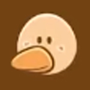

“내 이름은 최덕구↘. 오덕↗구가 아니지↘”
“고마버~”
“호록~!”1
“푸흡!” / “아녀, 눈물이 나서 그려.”
“꽥꽥꽥꽥.”
| 'H.O.T'를 좋아하는 천방지축 오리, ‘최 덕구’. |
| 이름 | 최덕구 | 대표색 | #fccea1 |
| 동물 | 오리 | 아이콘 |  |
| 나이 | 미상 | 직업 | 기자(스포일러) |
국봉과 마찬가지로 시청자 참여형 캐릭터이다.
우정리에는 국봉과 함께 왔는데, 도착한 지 얼마 되지도 않아 자빱의 서리 이후 장면을 목격했다.
이에 대해 곡길에게 증언하는 바람에 자빱의 협박을 받았으나, 오히려 덕구 자신이 자빱을 협박했다는 자빱의 매도에 화가 나 자빱을 재협박(!)하는 등 다사다난한 하루를 보낸다. 하지만 광산에 갔다가 별이 된 후로 마음을 고쳐 먹고 새로운 오리가 되기로 다짐한다.